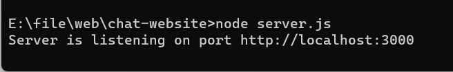

Tạo thư mục có cấu trúc:
chat-website
|
|
|---- client
----index.html
----client.js
|
|-----server.js
Trong đó: chat-website là tên thư mục bạn muốn đặt cho project này.
Khởi tạo Nodejs và các thư viện cần dùng, trong project này chúng ta sẽ dùng socket.io và
express
1: Mở Terminal tại thư mục
chat-website bằng cách click chuột phải vào thư mục
và chọn
Open in Terminal
2: Gõ các dòng lệnh sau:
npm init -y
npm install express socket.io
Thiết lập server.js
Dán đoạn code sau vào file server.js
const express = require('express');
const http = require('http');
const socketIo = require('socket.io');
const app = express();
const server = http.createServer(app);
const io = socketIo(server);
app.get('/', (req, res) => {
res.sendFile(__dirname + '/client/index.html');
});
app.get('/client.js', (req, res) => {
res.sendFile(__dirname + '/client/client.js');
});
server.listen(3000, () => {
console.log('Server is listening on port http://localhost:3000');
});
Sau khi dán vào file server.js
ở terminal của thư mục chat-website
được mở ở bước 3 gõ lệnh:
node server.js
Kết quả:

Xây dựng khung website.
Dán toàn bộ đoạn sau vào file client/index.html
<!DOCTYPE html>
<html lang="en">
<head>
<meta charset="UTF-8">
<title>Simple Chat using SocketIO</title>
<meta name="viewport" content="width=device-width, initial-scale=1">
<link href="https://cdn.jsdelivr.net/npm/bootstrap@5.3.2/dist/css/bootstrap.min.css" rel="stylesheet">
</head>
<body>
<h1 align="center">Chat with Strangers</h1>
<!--CSS start-->
<style>
</style>
<!--CSS end-->
<div class="container">
<div class="row">
<!--Content start-->
<!--Content end-->
</div>
</div>
<script src="https://cdn.jsdelivr.net/npm/bootstrap@5.3.2/dist/js/bootstrap.bundle.min.js"></script>
<!--Script start-->
<script src="https://code.jquery.com/jquery-3.6.0.min.js"></script>
<script src="/socket.io/socket.io.js"></script>
<script src="client.js"></script>
<!--Script end-->
</body>
</html>
Bước 6: Tạo không gian làm việc
Tạo 3 ô textbox gồm:
RoomID,
Nickname,
Message ,1 nút: "
Send" và một khung để hiển thị chat.
Đặt đoạn code này vào phía dưới "
<\!--Content start --!>"
<div class="col-4">
<label for="roomId">
Room ID
</label>
<input type="text" class="form-control" name="roomId" id="roomId" placeholder="Room ID">
<label for="nickname">
Nickname
</label>
<input type="text" class="form-control" name="name" id="nickname" placeholder="Nickname">
<button type="button" id="connect" class="btn btn-primary">Connect</button>
<br>
<label for="messages">
Messages
</label>
<input type="text" class="form-control" name="name" id="messages" placeholder="Messages">
<br>
<button type="button" id="send" class="btn btn-success">Send</button>
</div>
<div class="col-8" style="border: 1px dashed orange">
<h4>Chat:</h4>
<div id="chatbox" >
</div>
</div>
Lắng nghe sự kiện và xử lý kết nối từ SocketIO
Dán đoạn code sau vào server.js
let users = {};
io.on('connection', (socket) => {
console.log('A user connected');
socket.on('join', (data) => {
// Join a specific room
socket.join(data.room);
// Store the user's nickname in the users object
users[socket.id] = { nickname: data.nickname, room: data.room };
io.to(data.room).emit('chat_message', { nickname: 'Admin', message: users[socket.id].nickname+' joined the room!' });
});
socket.on('disconnect', () => {
console.log('User disconnected');
if(users[socket.id])
io.to(users[socket.id].room).emit('chat_message', { nickname: 'Admin', message: users[socket.id].nickname+' has left the room!' });
delete users[socket.id];
});
socket.on('chat_message', (data) => {
// Broadcast the message to everyone in the same room
io.to(data.room).emit('chat_message', { nickname: data.nickname, message: data.message });
});
});
Xử lý sự kiện ở client/client.js
Dán đoạn code sau vào server.js
const socket = io();
let room;
let nickname;
let joined = false;
$('#connect').click(function() {
room = $('#roomId').val();
nickname = $('#nickname').val();
if(room!='' && nickname!='')
{
socket.emit('join', { room, nickname });
joined = true;
}
else
alert('Please fill in roomId and nickname!');
});
$('#send').click(function() {
if(joined)
{
if($('#messages').val()!='')
{
socket.emit('chat_message', { room, nickname, message: $('#messages').val() });
$('#messages').val('');
}
}
else
{
alert('You did not join any room.')
}
})
$('#messages').keypress(function (event) {
if (event.keyCode === 13) {
$('#send').click();
}
});
socket.on('chat_message', function(msg) {
$('#chatbox').append('
'+msg.nickname+': '+msg.message+'
')
// Scroll to the bottom of the chat window for new messages
$('#chatbox').scrollTop($('#chatbox')[0].scrollHeight);
});
CSS cho chatbox
Dán đoạn này vào dưới "CSS start" thuộc file client/index.html
#chatbox
{
max-height: 80vh;
overflow-y: auto;
}
Tạo khung để show camera
Dán đoạn code sau vào file client/index.html, phía dưới nút "Send"
<hr>
<button id="start-camera">Start Camera</button>
<div id="camera-container" style="display: none;">
<video style="width: 300px" id="camera-stream" autoplay></video>
</div>